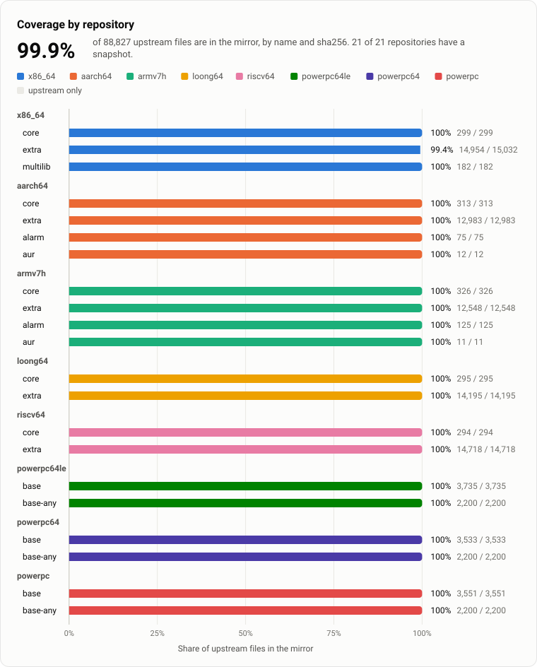
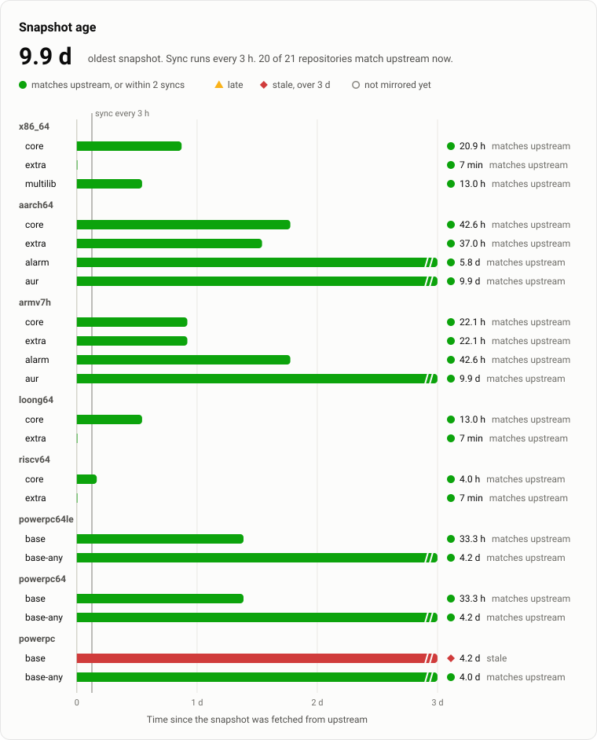
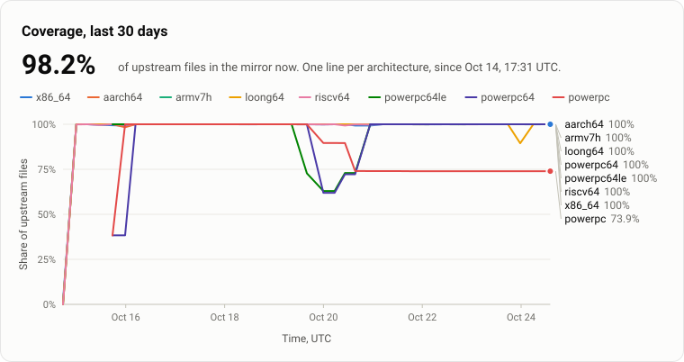
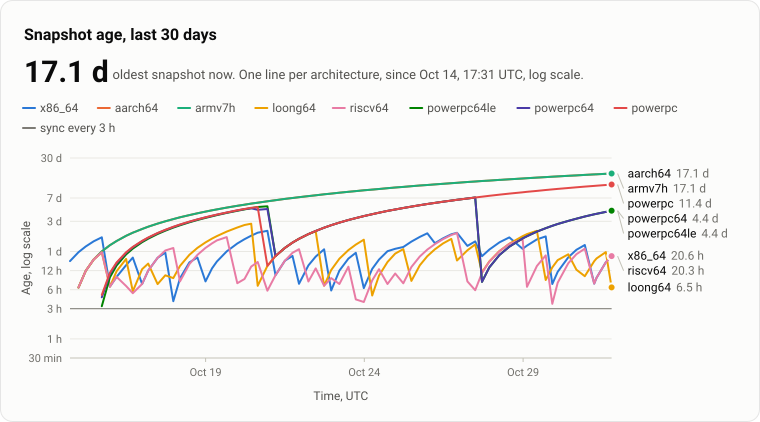
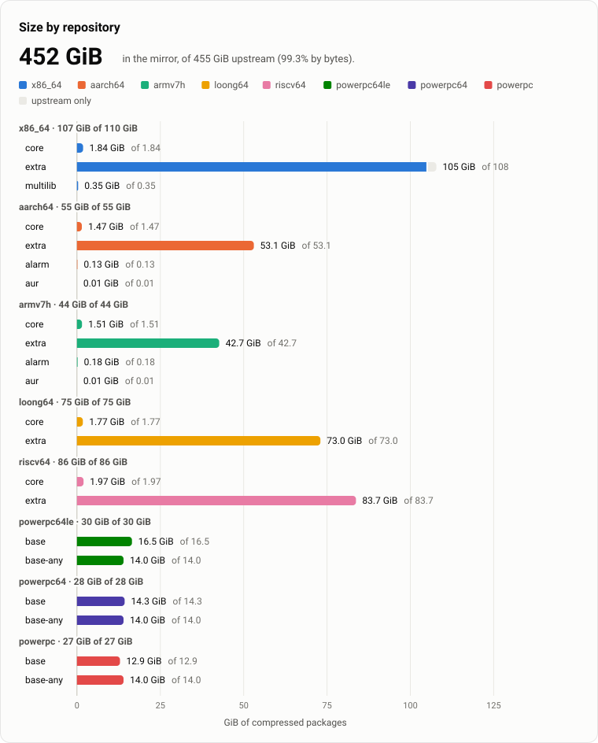
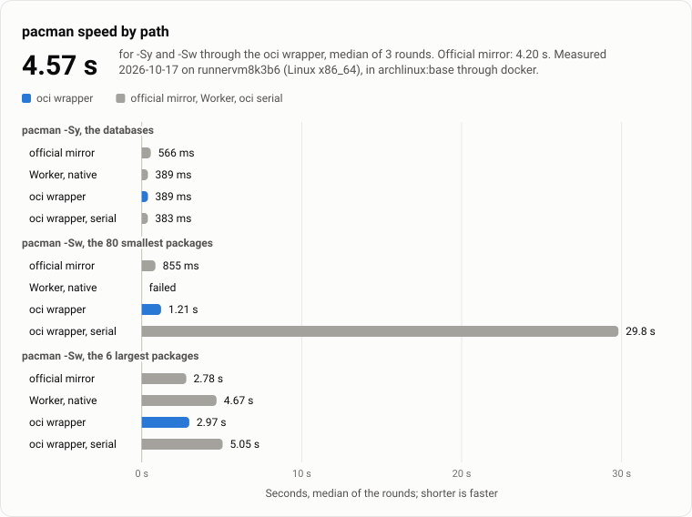

Arch Linux repositories for 8 architectures, mirrored to GitHub Container Registry and served to pacman.
98.2%
of upstream files are in the mirror, counted by file name and sha256 over 21 repositories.
pacman downloads as usual. The Worker answers each request with a redirect to GHCR.
[core]
Server = https://ghcr.mirror.archlinux.pkgforge.dev/$arch/$repo
Include = /etc/pacman.d/mirrorlistpacman reads the registry with client/pacman-oci as its XferCommand.
[options]
XferCommand = /usr/local/bin/pacman-oci %o %u
[core]
Server = oci://ghcr.io/pkgforge-dev/mirror-archlinux/$arch/$repo
Include = /etc/pacman.d/mirrorlist
| repository | in the mirror | upstream | share | missing |
|---|---|---|---|---|
| x86_64-core | 299 | 299 | 100% | 0 |
| x86_64-extra | 15,176 | 15,177 | 99.9% | 1 |
| x86_64-multilib | 182 | 182 | 100% | 0 |
| aarch64-core | 313 | 313 | 100% | 0 |
| aarch64-extra | 13,118 | 13,118 | 100% | 0 |
| aarch64-alarm | 75 | 75 | 100% | 0 |
| aarch64-aur | 12 | 12 | 100% | 0 |
| armv7h-core | 326 | 326 | 100% | 0 |
| armv7h-extra | 12,660 | 12,660 | 100% | 0 |
| armv7h-alarm | 125 | 125 | 100% | 0 |
| armv7h-aur | 11 | 11 | 100% | 0 |
| loong64-core | 295 | 295 | 100% | 0 |
| loong64-extra | 14,255 | 14,255 | 100% | 0 |
| riscv64-core | 294 | 294 | 100% | 0 |
| riscv64-extra | 14,795 | 14,795 | 100% | 0 |
| powerpc64le-base | 3,799 | 3,799 | 100% | 0 |
| powerpc64le-base-any | 2,238 | 2,238 | 100% | 0 |
| powerpc64-base | 3,596 | 3,596 | 100% | 0 |
| powerpc64-base-any | 2,238 | 2,238 | 100% | 0 |
| powerpc-base | 2,081 | 3,610 | 57.6% | 1,529 |
| powerpc-base-any | 2,238 | 2,238 | 100% | 0 |

| repository | state | fetched | synced | age | lag |
|---|---|---|---|---|---|
| x86_64-core | matches upstream | 17 min | 0 min | ||
| x86_64-extra | within 2 syncs | 10 min | 7 min | ||
| x86_64-multilib | matches upstream | 20.6 h | 0 min | ||
| aarch64-core | matches upstream | 17 min | 0 min | ||
| aarch64-extra | matches upstream | 17 min | 0 min | ||
| aarch64-alarm | matches upstream | 17.1 h | 0 min | ||
| aarch64-aur | matches upstream | 17.1 d | 0 min | ||
| armv7h-core | matches upstream | 17.1 h | 0 min | ||
| armv7h-extra | matches upstream | 17.1 h | 0 min | ||
| armv7h-alarm | matches upstream | 17.1 h | 0 min | ||
| armv7h-aur | matches upstream | 17.1 d | 0 min | ||
| loong64-core | matches upstream | 6.5 h | 0 min | ||
| loong64-extra | matches upstream | 4.6 h | 0 min | ||
| riscv64-core | matches upstream | 17 min | 0 min | ||
| riscv64-extra | matches upstream | 10 min | 0 min | ||
| powerpc64le-base | matches upstream | 4.4 d | 0 min | ||
| powerpc64le-base-any | matches upstream | 4.2 d | 0 min | ||
| powerpc64-base | matches upstream | 4.4 d | 0 min | ||
| powerpc64-base-any | matches upstream | 4.2 d | 0 min | ||
| powerpc-base | stale | 11.4 d | 7.0 d | ||
| powerpc-base-any | matches upstream | 4.2 d | 0 min |

| architecture | first point | coverage then | coverage now | largest age | points |
|---|---|---|---|---|---|
| x86_64 | 1.9% | 99.9% | 2.1 d | 339 | |
| aarch64 | 0% | 100% | 17.1 d | 339 | |
| armv7h | 0% | 100% | 17.1 d | 339 | |
| loong64 | 0% | 100% | 2.8 d | 339 | |
| riscv64 | 0% | 100% | 47.0 h | 339 | |
| powerpc64le | 100% | 100% | 7.1 d | 326 | |
| powerpc64 | 38.3% | 100% | 7.1 d | 326 | |
| powerpc | 38.2% | 73.8% | 11.4 d | 326 |

| architecture | first point | coverage then | coverage now | largest age | points |
|---|---|---|---|---|---|
| x86_64 | 1.9% | 99.9% | 2.1 d | 339 | |
| aarch64 | 0% | 100% | 17.1 d | 339 | |
| armv7h | 0% | 100% | 17.1 d | 339 | |
| loong64 | 0% | 100% | 2.8 d | 339 | |
| riscv64 | 0% | 100% | 47.0 h | 339 | |
| powerpc64le | 100% | 100% | 7.1 d | 326 | |
| powerpc64 | 38.3% | 100% | 7.1 d | 326 | |
| powerpc | 38.2% | 73.8% | 11.4 d | 326 |

| repository | GiB in the mirror | GiB upstream | share |
|---|---|---|---|
| x86_64-core | 1.84 | 1.84 | 100% |
| x86_64-extra | 109 | 109 | 99.9% |
| x86_64-multilib | 0.35 | 0.35 | 100% |
| aarch64-core | 1.47 | 1.47 | 100% |
| aarch64-extra | 54.2 | 54.2 | 100% |
| aarch64-alarm | 0.13 | 0.13 | 100% |
| aarch64-aur | 0.01 | 0.01 | 100% |
| armv7h-core | 1.51 | 1.51 | 100% |
| armv7h-extra | 42.8 | 42.8 | 100% |
| armv7h-alarm | 0.18 | 0.18 | 100% |
| armv7h-aur | 0.01 | 0.01 | 100% |
| loong64-core | 1.77 | 1.77 | 100% |
| loong64-extra | 72.9 | 72.9 | 100% |
| riscv64-core | 1.97 | 1.97 | 100% |
| riscv64-extra | 84.1 | 84.1 | 100% |
| powerpc64le-base | 16.7 | 16.7 | 100% |
| powerpc64le-base-any | 14.0 | 14.0 | 100% |
| powerpc64-base | 14.6 | 14.6 | 100% |
| powerpc64-base-any | 14.0 | 14.0 | 100% |
| powerpc-base | 5.07 | 13.2 | 38.5% |
| powerpc-base-any | 14.0 | 14.0 | 100% |

| operation | path | median | rounds | files | MiB |
|---|---|---|---|---|---|
| sy | official mirror | 411 ms | 793 ms, 411 ms, 411 ms | 1 | 0.1 |
| sy | Worker, native | 454 ms | 557 ms, 346 ms, 454 ms | 1 | 0.1 |
| sy | oci wrapper | 547 ms | 547 ms, 585 ms, 530 ms | 1 | 0.1 |
| sy | oci wrapper, serial | 535 ms | 554 ms, 535 ms, 496 ms | 1 | 0.1 |
| sw-small | official mirror | 2.27 s | 1.81 s, 2.27 s, 2.30 s | 80 | 0.6 |
| sw-small | Worker, native | 1.66 s | 3.52 s, 1.66 s, 1.54 s | 80 | 0.6 |
| sw-small | oci wrapper | 1.31 s | 1.32 s, 1.28 s, 1.31 s | 80 | 0.6 |
| sw-small | oci wrapper, serial | 38.3 s | 38.1 s, 38.3 s, 40.3 s | 80 | 0.6 |
| sw-large | official mirror | 3.43 s | 3.44 s, 3.43 s, 2.93 s | 6 | 515.0 |
| sw-large | Worker, native | 2.82 s | 4.68 s, 2.82 s, 2.67 s | 6 | 515.0 |
| sw-large | oci wrapper | 3.29 s | 3.15 s, 3.29 s, 3.37 s | 6 | 515.0 |
| sw-large | oci wrapper, serial | 6.05 s | 6.05 s, 6.00 s, 15.0 s | 6 | 515.0 |
Mirror counts the files that the database of each latest snapshot names. A repository with no snapshot holds 0. Upstream counts the files of upstream's database in this run. The size chart counts only the upstream files that the mirror holds.
| repository | mirror GiB | mirror files | upstream GiB | upstream files |
|---|---|---|---|---|
| x86_64 | 111 | 15,658 | 111 | 15,658 |
| core | 1.84 | 299 | 1.84 | 299 |
| extra | 109 | 15,177 | 109 | 15,177 |
| multilib | 0.35 | 182 | 0.35 | 182 |
| aarch64 | 55.8 | 13,518 | 55.8 | 13,518 |
| core | 1.47 | 313 | 1.47 | 313 |
| extra | 54.2 | 13,118 | 54.2 | 13,118 |
| alarm | 0.13 | 75 | 0.13 | 75 |
| aur | 0.01 | 12 | 0.01 | 12 |
| armv7h | 44.5 | 13,122 | 44.5 | 13,122 |
| core | 1.51 | 326 | 1.51 | 326 |
| extra | 42.8 | 12,660 | 42.8 | 12,660 |
| alarm | 0.18 | 125 | 0.18 | 125 |
| aur | 0.01 | 11 | 0.01 | 11 |
| loong64 | 74.7 | 14,550 | 74.7 | 14,550 |
| core | 1.77 | 295 | 1.77 | 295 |
| extra | 72.9 | 14,255 | 72.9 | 14,255 |
| riscv64 | 86.1 | 15,089 | 86.1 | 15,089 |
| core | 1.97 | 294 | 1.97 | 294 |
| extra | 84.1 | 14,795 | 84.1 | 14,795 |
| powerpc64le | 30.8 | 6,037 | 30.8 | 6,037 |
| base | 16.7 | 3,799 | 16.7 | 3,799 |
| base-any | 14.0 | 2,238 | 14.0 | 2,238 |
| powerpc64 | 28.6 | 5,834 | 28.6 | 5,834 |
| base | 14.6 | 3,596 | 14.6 | 3,596 |
| base-any | 14.0 | 2,238 | 14.0 | 2,238 |
| powerpc | 27.0 | 5,789 | 27.2 | 5,848 |
| base | 12.9 | 3,551 | 13.2 | 3,610 |
| base-any | 14.0 | 2,238 | 14.0 | 2,238 |
| all architectures | 458 | 89,597 | 459 | 89,656 |
| repository | state | coverage | files | upstream | missing | GiB | age | synced | lag | fetched | upstream server | Worker | badge |
|---|---|---|---|---|---|---|---|---|---|---|---|---|---|
x86_64-core | ok | 100% | 299 | 299 | 0 | 1.84 | 17 min | 13 min ago | 0 min | https://geo.mirror.pkgbuild.com/core/os/x86_64 | db 302, package 302 | ||
x86_64-extra | partial | 99.9% | 15,176 | 15,177 | 1python-langgraph-1.2.18-1-any.pkg.tar.zst | 109 | 10 min | 2 min ago | 7 min | https://geo.mirror.pkgbuild.com/extra/os/x86_641 db_server(s) not takenhttps://fastly.mirror.pkgbuild.com/extra/os/x86_64: behind by 1 package(s), against https://geo.mirror.pkgbuild.com/extra/os/x86_64 | db 302, package 302 | ||
x86_64-multilib | ok | 100% | 182 | 182 | 0 | 0.35 | 20.6 h | 20 h ago | 0 min | https://geo.mirror.pkgbuild.com/multilib/os/x86_64 | db 302, package 302 | ||
aarch64-core | ok | 100% | 313 | 313 | 0 | 1.47 | 17 min | 14 min ago | 0 min | https://fl.us.mirror.archlinuxarm.org/aarch64/core | db 302, package 302 | ||
aarch64-extra | ok | 100% | 13,118 | 13,118 | 0 | 54.2 | 17 min | 13 min ago | 0 min | https://fl.us.mirror.archlinuxarm.org/aarch64/extra | db 302, package 302 | ||
aarch64-alarm | ok | 100% | 75 | 75 | 0 | 0.13 | 17.1 h | 17 h ago | 0 min | https://fl.us.mirror.archlinuxarm.org/aarch64/alarm | db 302, package 302 | ||
aarch64-aur | ok | 100% | 12 | 12 | 0 | 0.01 | 17.1 d | 17 d ago | 0 min | https://fl.us.mirror.archlinuxarm.org/aarch64/aur | db 302, package 302 | ||
armv7h-core | ok | 100% | 326 | 326 | 0 | 1.51 | 17.1 h | 16 h ago | 0 min | https://fl.us.mirror.archlinuxarm.org/armv7h/core | db 302, package 302 | ||
armv7h-extra | ok | 100% | 12,660 | 12,660 | 0 | 42.8 | 17.1 h | 16 h ago | 0 min | https://fl.us.mirror.archlinuxarm.org/armv7h/extra | db 302, package 302 | ||
armv7h-alarm | ok | 100% | 125 | 125 | 0 | 0.18 | 17.1 h | 17 h ago | 0 min | https://fl.us.mirror.archlinuxarm.org/armv7h/alarm | db 302, package 302 | ||
armv7h-aur | ok | 100% | 11 | 11 | 0 | 0.01 | 17.1 d | 17 d ago | 0 min | https://fl.us.mirror.archlinuxarm.org/armv7h/aur | db 302, package 302, download 200 | ||
loong64-core | ok | 100% | 295 | 295 | 0 | 1.77 | 6.5 h | 6 h ago | 0 min | https://loongarchlinux.lcpu.dev/loongarch/archlinux/core/os/loong64 | db 302, package 302 | ||
loong64-extra | ok | 100% | 14,255 | 14,255 | 0 | 72.9 | 4.6 h | 4 h ago | 0 min | https://loongarchlinux.lcpu.dev/loongarch/archlinux/extra/os/loong64 | db 302, package 302 | ||
riscv64-core | ok | 100% | 294 | 294 | 0 | 1.97 | 17 min | 14 min ago | 0 min | https://riscv.mirror.pkgbuild.com/repo/core | db 302, package 302 | ||
riscv64-extra | ok | 100% | 14,795 | 14,795 | 0 | 84.1 | 10 min | 2 min ago | 0 min | https://riscv.mirror.pkgbuild.com/repo/extra | db 302, package 302 | ||
powerpc64le-base | ok | 100% | 3,799 | 3,799 | 0 | 16.7 | 4.4 d | 4 d ago | 0 min | https://repo.archlinuxpower.org/base/powerpc64le | db 302, package 302 | ||
powerpc64le-base-any | ok | 100% | 2,238 | 2,238 | 0 | 14.0 | 4.2 d | 4 d ago | 0 min | https://repo.archlinuxpower.org/base/any | db 302, package 302 | ||
powerpc64-base | ok | 100% | 3,596 | 3,596 | 0 | 14.6 | 4.4 d | 4 d ago | 0 min | https://repo.archlinuxpower.org/base/powerpc64 | db 302, package 302 | ||
powerpc64-base-any | ok | 100% | 2,238 | 2,238 | 0 | 14.0 | 4.2 d | 4 d ago | 0 min | https://repo.archlinuxpower.org/base/any | db 302, package 302 | ||
powerpc-base | stale | 57.6% | 2,081 | 3,610 | 1,529aardvark-dns-2.0.0-1-powerpc.pkg.tar.zst, abiword-3.0.8-2-powerpc.pkg.tar.zst, abseil-cpp-20260526.0-2-powerpc.pkg.tar.zst, accessibility-inspector-26.08.0-1-powerpc.pkg.tar.zst, accounts-qml-module-0.7-7-powerpc.pkg.tar.zst, accountsservice-26.27.3-1-powerpc.pkg.tar.zst, adios2-2.12.1-6-powerpc.pkg.tar.zst, akonadi-26.08.0-1.1-powerpc.pkg.tar.zst, akonadi-contacts-26.08.0-1-powerpc.pkg.tar.zst, akonadi-mime-26.08.0-1-powerpc.pkg.tar.zst, akonadi-search-26.08.0-1-powerpc.pkg.tar.zst, alembic-1.8.12-1-powerpc.pkg.tar.zst, alligator-26.08.0-1-powerpc.pkg.tar.zst, alsa-card-profiles-1:1.6.8-1-powerpc.pkg.tar.zst, aml-1.0.0-1-powerpc.pkg.tar.zst, analitza-26.08.0-1-powerpc.pkg.tar.zst, aom-3.14.1-1-powerpc.pkg.tar.zst, aom-docs-3.14.1-1-powerpc.pkg.tar.zst, apache-orc-2.3.1-1-powerpc.pkg.tar.zst, apparmor-5.0.2-1-powerpc.pkg.tar.zst, and 1,509 more | 13.2 | 11.4 d | 11 d ago | 7.0 d | https://repo.archlinuxpower.org/base/powerpc | db 302, package 302 | ||
powerpc-base-any | ok | 100% | 2,238 | 2,238 | 0 | 14.0 | 4.2 d | 4 d ago | 0 min | https://repo.archlinuxpower.org/base/any | db 302, package 302 |
Each probe is one GET with no redirect followed. A repository with a snapshot must answer 302 to an https URL, and that signed URL must answer a request for one byte from the status runner, with no credential. A redirect host outside *.githubusercontent.com whose signed URL works is shown, and passes. A repository with no snapshot must answer 404. Once per run, the smallest database is downloaded through the Worker, and it must be the database its snapshot names. Failed probes in 2 runs in a row, over 50 minutes or more, open the worker-down issue.
| repository | probe | URL | HTTP | expected | signed URL | time | redirect to | cache | result |
|---|---|---|---|---|---|---|---|---|---|
| x86_64-core | db | https://ghcr.mirror.archlinux.pkgforge.dev/x86_64/core/core.db | 302 | 302 | 206 | 131 ms | pkg-containers.githubusercontent.com | miss | ok |
| x86_64-core | package | https://ghcr.mirror.archlinux.pkgforge.dev/x86_64/core/acl-2.4.0-1-x86_64.pkg.tar.zst | 302 | 302 | 206 | 128 ms | pkg-containers.githubusercontent.com | miss | ok |
| x86_64-extra | db | https://ghcr.mirror.archlinux.pkgforge.dev/x86_64/extra/extra.db | 302 | 302 | 206 | 98 ms | pkg-containers.githubusercontent.com | miss | ok |
| x86_64-extra | package | https://ghcr.mirror.archlinux.pkgforge.dev/x86_64/extra/0ad-0.28.0-3-x86_64.pkg.tar.zst | 302 | 302 | 206 | 120 ms | pkg-containers.githubusercontent.com | miss | ok |
| x86_64-multilib | db | https://ghcr.mirror.archlinux.pkgforge.dev/x86_64/multilib/multilib.db | 302 | 302 | 206 | 166 ms | pkg-containers.githubusercontent.com | miss | ok |
| x86_64-multilib | package | https://ghcr.mirror.archlinux.pkgforge.dev/x86_64/multilib/cmucl-21e-1-x86_64.pkg.tar.zst | 302 | 302 | 206 | 139 ms | pkg-containers.githubusercontent.com | miss | ok |
| aarch64-core | db | https://ghcr.mirror.archlinux.pkgforge.dev/aarch64/core/core.db | 302 | 302 | 206 | 146 ms | pkg-containers.githubusercontent.com | miss | ok |
| aarch64-core | package | https://ghcr.mirror.archlinux.pkgforge.dev/aarch64/core/acl-2.4.0-1-aarch64.pkg.tar.xz | 302 | 302 | 206 | 160 ms | pkg-containers.githubusercontent.com | miss | ok |
| aarch64-extra | db | https://ghcr.mirror.archlinux.pkgforge.dev/aarch64/extra/extra.db | 302 | 302 | 206 | 192 ms | pkg-containers.githubusercontent.com | miss | ok |
| aarch64-extra | package | https://ghcr.mirror.archlinux.pkgforge.dev/aarch64/extra/389-ds-base-3.3.1-1-aarch64.pkg.tar.xz | 302 | 302 | 206 | 116 ms | pkg-containers.githubusercontent.com | miss | ok |
| aarch64-alarm | db | https://ghcr.mirror.archlinux.pkgforge.dev/aarch64/alarm/alarm.db | 302 | 302 | 206 | 227 ms | pkg-containers.githubusercontent.com | miss | ok |
| aarch64-alarm | package | https://ghcr.mirror.archlinux.pkgforge.dev/aarch64/alarm/aml-libs-c2-r9.296f39b-1-aarch64.pkg.tar.xz | 302 | 302 | 206 | 192 ms | pkg-containers.githubusercontent.com | miss | ok |
| aarch64-aur | db | https://ghcr.mirror.archlinux.pkgforge.dev/aarch64/aur/aur.db | 302 | 302 | 206 | 197 ms | pkg-containers.githubusercontent.com | miss | ok |
| aarch64-aur | package | https://ghcr.mirror.archlinux.pkgforge.dev/aarch64/aur/autojump-rs-git-0.5.1.r14.g65abf11-4-any.pkg.tar.xz | 302 | 302 | 206 | 204 ms | pkg-containers.githubusercontent.com | miss | ok |
| armv7h-core | db | https://ghcr.mirror.archlinux.pkgforge.dev/armv7h/core/core.db | 302 | 302 | 206 | 208 ms | pkg-containers.githubusercontent.com | miss | ok |
| armv7h-core | package | https://ghcr.mirror.archlinux.pkgforge.dev/armv7h/core/acl-2.4.0-1-armv7h.pkg.tar.xz | 302 | 302 | 206 | 98 ms | pkg-containers.githubusercontent.com | miss | ok |
| armv7h-extra | db | https://ghcr.mirror.archlinux.pkgforge.dev/armv7h/extra/extra.db | 302 | 302 | 206 | 175 ms | pkg-containers.githubusercontent.com | miss | ok |
| armv7h-extra | package | https://ghcr.mirror.archlinux.pkgforge.dev/armv7h/extra/389-ds-base-2.4.1-2-armv7h.pkg.tar.xz | 302 | 302 | 206 | 89 ms | pkg-containers.githubusercontent.com | miss | ok |
| armv7h-alarm | db | https://ghcr.mirror.archlinux.pkgforge.dev/armv7h/alarm/alarm.db | 302 | 302 | 206 | 186 ms | pkg-containers.githubusercontent.com | miss | ok |
| armv7h-alarm | package | https://ghcr.mirror.archlinux.pkgforge.dev/armv7h/alarm/aml-libs-c1-r11.820b12a-5-armv7h.pkg.tar.xz | 302 | 302 | 206 | 107 ms | pkg-containers.githubusercontent.com | miss | ok |
| armv7h-aur | db | https://ghcr.mirror.archlinux.pkgforge.dev/armv7h/aur/aur.db | 302 | 302 | 206 | 184 ms | pkg-containers.githubusercontent.com | miss | ok |
| armv7h-aur | package | https://ghcr.mirror.archlinux.pkgforge.dev/armv7h/aur/arm-mem-git-39.b48ea15-1-armv7h.pkg.tar.xz | 302 | 302 | 206 | 212 ms | pkg-containers.githubusercontent.com | miss | ok |
| armv7h-aur | download | https://ghcr.mirror.archlinux.pkgforge.dev/armv7h/aur/aur.db | 200 | 200 | - | 198 ms | - | - | ok |
| loong64-core | db | https://ghcr.mirror.archlinux.pkgforge.dev/loong64/core/core.db | 302 | 302 | 206 | 215 ms | pkg-containers.githubusercontent.com | miss | ok |
| loong64-core | package | https://ghcr.mirror.archlinux.pkgforge.dev/loong64/core/acl-2.4.0-1-loong64.pkg.tar.zst | 302 | 302 | 206 | 147 ms | pkg-containers.githubusercontent.com | miss | ok |
| loong64-extra | db | https://ghcr.mirror.archlinux.pkgforge.dev/loong64/extra/extra.db | 302 | 302 | 206 | 166 ms | pkg-containers.githubusercontent.com | miss | ok |
| loong64-extra | package | https://ghcr.mirror.archlinux.pkgforge.dev/loong64/extra/0ad-data-0.28.0-1-any.pkg.tar.zst | 302 | 302 | 206 | 134 ms | pkg-containers.githubusercontent.com | miss | ok |
| riscv64-core | db | https://ghcr.mirror.archlinux.pkgforge.dev/riscv64/core/core.db | 302 | 302 | 206 | 133 ms | pkg-containers.githubusercontent.com | miss | ok |
| riscv64-core | package | https://ghcr.mirror.archlinux.pkgforge.dev/riscv64/core/acl-2.4.0-1-riscv64.pkg.tar.zst | 302 | 302 | 206 | 136 ms | pkg-containers.githubusercontent.com | miss | ok |
| riscv64-extra | db | https://ghcr.mirror.archlinux.pkgforge.dev/riscv64/extra/extra.db | 302 | 302 | 206 | 122 ms | pkg-containers.githubusercontent.com | miss | ok |
| riscv64-extra | package | https://ghcr.mirror.archlinux.pkgforge.dev/riscv64/extra/0ad-0.28.0-3-riscv64.pkg.tar.zst | 302 | 302 | 206 | 116 ms | pkg-containers.githubusercontent.com | miss | ok |
| powerpc64le-base | db | https://ghcr.mirror.archlinux.pkgforge.dev/powerpc64le/base/base.db | 302 | 302 | 206 | 204 ms | pkg-containers.githubusercontent.com | miss | ok |
| powerpc64le-base | package | https://ghcr.mirror.archlinux.pkgforge.dev/powerpc64le/base/7zip-26.02-1-powerpc64le.pkg.tar.zst | 302 | 302 | 206 | 122 ms | pkg-containers.githubusercontent.com | miss | ok |
| powerpc64le-base-any | db | https://ghcr.mirror.archlinux.pkgforge.dev/powerpc64le/base-any/base-any.db | 302 | 302 | 206 | 152 ms | pkg-containers.githubusercontent.com | miss | ok |
| powerpc64le-base-any | package | https://ghcr.mirror.archlinux.pkgforge.dev/powerpc64le/base-any/aarch64-linux-gnu-libxcrypt-4.4.38-1.1-any.pkg.tar.zst | 302 | 302 | 206 | 131 ms | pkg-containers.githubusercontent.com | miss | ok |
| powerpc64-base | db | https://ghcr.mirror.archlinux.pkgforge.dev/powerpc64/base/base.db | 302 | 302 | 206 | 161 ms | pkg-containers.githubusercontent.com | miss | ok |
| powerpc64-base | package | https://ghcr.mirror.archlinux.pkgforge.dev/powerpc64/base/7zip-26.02-1-powerpc64.pkg.tar.zst | 302 | 302 | 206 | 118 ms | pkg-containers.githubusercontent.com | miss | ok |
| powerpc64-base-any | db | https://ghcr.mirror.archlinux.pkgforge.dev/powerpc64/base-any/base-any.db | 302 | 302 | 206 | 186 ms | pkg-containers.githubusercontent.com | miss | ok |
| powerpc64-base-any | package | https://ghcr.mirror.archlinux.pkgforge.dev/powerpc64/base-any/aarch64-linux-gnu-libxcrypt-4.4.38-1.1-any.pkg.tar.zst | 302 | 302 | 206 | 118 ms | pkg-containers.githubusercontent.com | miss | ok |
| powerpc-base | db | https://ghcr.mirror.archlinux.pkgforge.dev/powerpc/base/base.db | 302 | 302 | 206 | 168 ms | pkg-containers.githubusercontent.com | miss | ok |
| powerpc-base | package | https://ghcr.mirror.archlinux.pkgforge.dev/powerpc/base/7zip-26.02-1-powerpc.pkg.tar.zst | 302 | 302 | 206 | 111 ms | pkg-containers.githubusercontent.com | miss | ok |
| powerpc-base-any | db | https://ghcr.mirror.archlinux.pkgforge.dev/powerpc/base-any/base-any.db | 302 | 302 | 206 | 198 ms | pkg-containers.githubusercontent.com | miss | ok |
| powerpc-base-any | package | https://ghcr.mirror.archlinux.pkgforge.dev/powerpc/base-any/aarch64-linux-gnu-libxcrypt-4.4.38-1.1-any.pkg.tar.zst | 302 | 302 | 206 | 126 ms | pkg-containers.githubusercontent.com | miss | ok |
The status workflow writes each badge when it measures: each hour, after a scheduled sync, and after a sync that promoted a target. An age in a badge counts to that measurement, not to now. The synced badge is green under 6 h, yellow under 24 h, and red after. A badge is an image and runs no script, so it shows its time in UTC or as an age.
| badge | URL |
|---|---|
https://pkgforge-dev.github.io/mirror-archlinux/badges/x86_64-core.svg | |
https://pkgforge-dev.github.io/mirror-archlinux/badges/x86_64-extra.svg | |
https://pkgforge-dev.github.io/mirror-archlinux/badges/x86_64-multilib.svg | |
https://pkgforge-dev.github.io/mirror-archlinux/badges/aarch64-core.svg | |
https://pkgforge-dev.github.io/mirror-archlinux/badges/aarch64-extra.svg | |
https://pkgforge-dev.github.io/mirror-archlinux/badges/aarch64-alarm.svg | |
https://pkgforge-dev.github.io/mirror-archlinux/badges/aarch64-aur.svg | |
https://pkgforge-dev.github.io/mirror-archlinux/badges/armv7h-core.svg | |
https://pkgforge-dev.github.io/mirror-archlinux/badges/armv7h-extra.svg | |
https://pkgforge-dev.github.io/mirror-archlinux/badges/armv7h-alarm.svg | |
https://pkgforge-dev.github.io/mirror-archlinux/badges/armv7h-aur.svg | |
https://pkgforge-dev.github.io/mirror-archlinux/badges/loong64-core.svg | |
https://pkgforge-dev.github.io/mirror-archlinux/badges/loong64-extra.svg | |
https://pkgforge-dev.github.io/mirror-archlinux/badges/riscv64-core.svg | |
https://pkgforge-dev.github.io/mirror-archlinux/badges/riscv64-extra.svg | |
https://pkgforge-dev.github.io/mirror-archlinux/badges/powerpc64le-base.svg | |
https://pkgforge-dev.github.io/mirror-archlinux/badges/powerpc64le-base-any.svg | |
https://pkgforge-dev.github.io/mirror-archlinux/badges/powerpc64-base.svg | |
https://pkgforge-dev.github.io/mirror-archlinux/badges/powerpc64-base-any.svg | |
https://pkgforge-dev.github.io/mirror-archlinux/badges/powerpc-base.svg | |
https://pkgforge-dev.github.io/mirror-archlinux/badges/powerpc-base-any.svg | |
https://pkgforge-dev.github.io/mirror-archlinux/badges/x86_64.svg | |
https://pkgforge-dev.github.io/mirror-archlinux/badges/aarch64.svg | |
https://pkgforge-dev.github.io/mirror-archlinux/badges/armv7h.svg | |
https://pkgforge-dev.github.io/mirror-archlinux/badges/loong64.svg | |
https://pkgforge-dev.github.io/mirror-archlinux/badges/riscv64.svg | |
https://pkgforge-dev.github.io/mirror-archlinux/badges/powerpc64le.svg | |
https://pkgforge-dev.github.io/mirror-archlinux/badges/powerpc64.svg | |
https://pkgforge-dev.github.io/mirror-archlinux/badges/powerpc.svg | |
https://pkgforge-dev.github.io/mirror-archlinux/badges/all.svg | |
https://pkgforge-dev.github.io/mirror-archlinux/badges/synced.svg | |
https://pkgforge-dev.github.io/mirror-archlinux/badges/size.svg | |
https://pkgforge-dev.github.io/mirror-archlinux/badges/size-x86_64.svg | |
https://pkgforge-dev.github.io/mirror-archlinux/badges/size-aarch64.svg | |
https://pkgforge-dev.github.io/mirror-archlinux/badges/size-armv7h.svg | |
https://pkgforge-dev.github.io/mirror-archlinux/badges/size-loong64.svg | |
https://pkgforge-dev.github.io/mirror-archlinux/badges/size-riscv64.svg | |
https://pkgforge-dev.github.io/mirror-archlinux/badges/size-powerpc64le.svg | |
https://pkgforge-dev.github.io/mirror-archlinux/badges/size-powerpc64.svg | |
https://pkgforge-dev.github.io/mirror-archlinux/badges/size-powerpc.svg | |
https://pkgforge-dev.github.io/mirror-archlinux/badges/speed.svg |